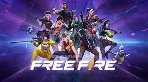

VIDEOJUEGOS
Los videojuegos son programas de ordenador que conectados a una pantalla o televisión, integran un sistema de vídeo y audio. A través de ese sistema el usuario puede vivir experiencias disfrutando de actividades que en la realidad no practicaría.
| # | Nombre | categoria | Función |
|---|---|---|---|
| 1 | Starfield PC XSX | Mundo abierto / RPG Occidental l | Starfield es un RPG de mundo abierto con exploración de planetas y estaría conectado al universo que vemos en la saga Fallout, pero en su versión más futura. Para la empresa, Bethesda Softworks, es su nueva gran saga para un jugador, su primera gran producción completamente nueva en 25 años. |
| 2 | Baldur's Gate 3 PC PS5 XSX | Action-RPG / RPG Occidental | Baldur's Gate 3 es la tercera parte de la emblemática saga de videojuegos de rol Baldur's Gate. Considerada como una de las series más influyentes de la historia, en esta ocasión, los encargados de darle vida son los desarrolladores de Larian Studios, creadores de Divinity, prometiendo gran fidelidad a los manuales de Dragones y Mazmorras en su quinta edición, así como a la serie que dio origen a al rol occidental más puro en los videojuegos. |
| 3 | The Legend of Zelda: Tears of the Kingdom | Action-RPG / Aventura de acción / Mundo abierto | The Legend of Zelda: Tears of the Kingdom es el nuevo videojuego para Nintendo Switch de la saga de juegos de The Legend of Zelda, secuela directa de Breath of the Wild. Protagonizada por Link, y con una jugabilidad basada en la acción y el rol en mundo abierto, esta aventura nos devuelve a Hyrule con una búsqueda de la Princesa Zelda que cuenta con mecánicas de fusión de objetos y armas más avanzadas, nuevas zonas por explorar en los cielos y mucho más. |
| 4 | Lies of P PC XSX PS5 PS4 XBOne | Aventura de acción / Hack and Slash / Tipo Souls | Ambientada en la era de la Belle Époque, Lies of P le da un giro oscuro al conocido cuento de Pinocho. Despertado por una voz misteriosa, Pinocho debe encontrar la manera de salvar la ciudad de Krat de ser asolada por los títeres. Pinocho, con su corazón especial, aprende a convertirse en un verdadero humano mintiendo. |
| 5 | Sea of Stars PC Switch PS4 PS5 XSX XBOne | JRPG / Rol | Sea of Stars es un juego de rol inspirado fuertemente por los grandes clásicos del género, sobre todo en aquellos lanzados en la década de los noventa. Desarrollado por Sabotage Studio, en Sea of Stars viviremos la aventura de dos niños del solsticio en una aventura que servirá como precuela -muy alejada- de The Messenger. Durante la historia podremos controlar un total de seis personajes jugables. Además, a nivel mecánico se hará especial hincapié en el ciclo de día y noche y en la habilidad para cambiarlo para resolver puzles del entorno. |
| 6 | Mortal Kombat 1 PS5 XSX PC Switch | Lucha / Lucha 2D | Nueva entrega de la veterana saga de lucha de NetherRealm Studios. Descubre un nuevo universo de Mortal Kombat creado por Liu Kang, Dios del Fuego. Mortal Kombat 1 abre paso a una nueva era de esta icónica saga con un nuevo sistema de kombate, modos de juego y fatalities. |
| 7 | EA Sports FC 24 PS5 XSX PC PS4 XBOne Switch | Deportes / Fútbol | La nueva entrega del simulador de Electronic Arts, sucesor de FIFA, trae de nuevo todas las licencias de las principales ligas europeas y americanas, modos clásicos y una ración de mejoras técnicas, gráficas o en el control que hacen su jugabilidad más divertida. |
| 8 | Resident Evil 4 Remake PS5 XSX PC PS4 iPhone | Aventura de acción / Survival Horror / Terror / Zombis | Resident Evil 4 Remake es la reimaginación del clásico juego de acción y terror en tercera persona desarrollado por Capcom para PlayStation 4 y 5, Xbox One, Xbox Series S y X y PC. Se trata de la puesta al día del survival horror de la saga Resident Evil lanzado en 2005, una ambiciosa puesta al día a nivel jugable y gráfico que nos devuelve a Leon S. Kennedy en su viaje a un récondito pueblo de España en su rescate de la hija del presidente de Estados Unidos. |
| 9 | Cyberpunk 2077 PC PS4 XBOne PS5 XSX | Mundo abierto / RPG Occidental | Cyberpunk 2077 es el nuevo videojuego de rol en primera persona con estructura de mundo abierto de CD Projekt RED. Los padres de The Witcher nos presentan para Xbox One, PC y PS4 una aventura de corte futurista y ciberpunk en la que encarnaremos a un personaje diseñado a nuestra medida y en la que tendremos que sobrevivir en una peligrosa urbe plagada de corporaciones, ciborgs, bandas y las más variadas amenazas tecnológicas. |
| 10 | Grand Theft Auto V PS4 PS3 XBOne X360 PC | Mundo abierto / Tipo GTA | Grand Theft Auto V para PS4 es una versión mejorada y ampliada del GTA V original aparecido en PS3 en 2013. Contará con nuevos gráficos y nuevo contenido como armas, vehículos o misiones, además de una banda sonora ampliada y más jugadores en el modo online. Nos cuenta la épica historia de Michael, Franklin y Trevor en la ciudad de Los Santos y sus alrededores. |
| 11 | Roblox | Multijugador gratuito social y online. | Roblox es una plataforma de entretenimiento online para jugar que permite a las personas crear juegos para el público a través de herramienta digital de Roblox conocida como Roblox Estudio. |
| 12 | Minecraft | Sandbox/Un jugador, multijugador | Minecraft es un videojuego tipo sandbox, su traducción literal sería “caja de arena” y es lo que representa la experiencia de juego. Los jugadores pueden modelar el mundo a su gusto, destruir y construir, como si estuviesen jugando en una caja de arena. |
| 13 | Among Us | juego multijugador en línea | Among Us es un juego multijugador en línea con clasificación PEGI 7+ que permite que un máximo de 10 jugadores asuman los roles de 'Compañero de tripulación' o 'Impostor'. El objetivo del juego es que los Crewmates identifiquen a los jugadores que son los impostores en el juego. |
| 14 | Fortnite | Batalla real | El objetivo es ser el último jugador (o equipo, si juega en equipos pequeños) vivo matando o evitando a otros jugadores. |
LOS MEJORES VIDEOJUEGOS DEL 2023
Call of Duty
HAZTE CON EL JUEGO
Call of Duty es una serie de videojuegos de disparos en primera persona, de estilo bélico, desarrollada principal e inicialmente por Infinity Ward, Treyarch, Sledgehammer Games y en menor proporción Raven Software y distribuida por Activision

Call
Garena Free Fire
INSANOS
Garena Free Fire; también conocido anteriormente como Free Fire Battlegrounds, es un videojuego battle royale de 2017, desarrollado por 111dots Studio y publicado por Garena para Android e IOS. Se convirtió en el juego móvil más descargado.
Free
Fortnite
A TODA COSTA
Fortnite es un videojuego del año 2017 desarrollado por la empresa Epic Games lanzado como diferentes paquetes de software que presentan diferentes modos de juego, pero que comparten el mismo motor de juego y mecánicas.
Fortnite
Genshin Impact
START THE JOURNEY NOW!
Genshin Impact es un videojuego de rol de acción de mundo abierto y gratuito, con una mecánica de monetización de gacha para conseguir elementos adicionales como personajes especiales y armas.
Genshin
Valorant
EVOLUCIÓN
Valorant es un hero shooter en primera persona multijugador gratuito desarrollado y publicado por Riot Games. El juego se anunció por primera vez con el nombre en clave Project A en octubre de 2019.
Valorant
Grand Theft Auto V
Bienvenidos a Los Santos
Grand Theft Auto V es un videojuego de acción-aventura de mundo abierto en tercera persona desarrollado por el estudio escocés Rockstar North y distribuido por Rockstar Games.

GTA 5